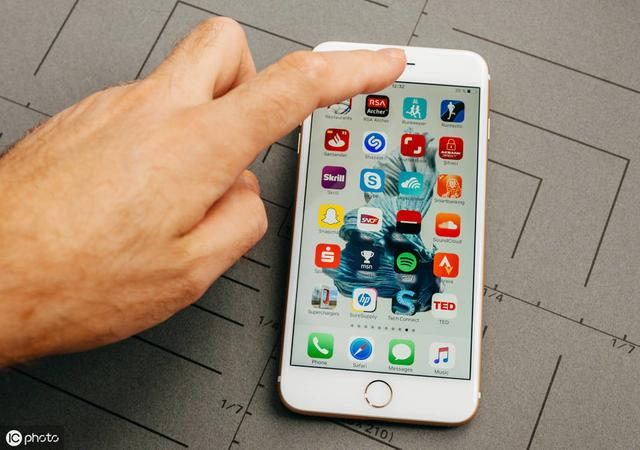

开始进入这个行业大家可能都是通过自己的手机下载了一个试玩平台，然后在这个平台做了几百块钱，然后就买了手机，做到后面发现任务越来越少了，要么就提示安装过此app对不对，这个是每个新手朋友都会遇到的，不是说你上了手机每天就能刷个几百，这个想法是错的。为什么你做不了？那是因为你的手机在平台那检测出来了，手机跟人一样也是有出厂证明的手机的叫UDiD，平台通过检测你手机的UDid来判定你是不是新手，老用户的话软件都下载过不会给你发放新手任务，你要做首先让你的手机成为一个新机，要么硬改，要么软改，硬改话不太可能就是换手机的主板玩么就是换手机当然你要是有这样的资源你可以，软改用的比较多。

软改怎么做呢？常用的就是抹机+软改，要么就是FD抓包，我们先说说FD吧首先你要用FD的话你要知道抓哪些数据然后改哪些东西，FD的优势，不花钱，FD的劣势就是花费的时间比较多，每个平台改的数据不一样对于新手来说不推荐然后在来说说软改，是现在用的比较多的，软改的优势 简单 花费的时间少，软改的劣势就是需要花钱。一次1-3块钱。
试玩刚开始的做的时候很多人每天都可以刷个70-80的一个收益，后期的话你会发现任务量越来越少，或者直接提示你已经安装过比App，任务量少了收益肯定低，只有这个平台几块钱，那个平台几块钱，或者就是在你提现的时候前期到了但是后期就提现异常，不到账这样的情况。
前期把事情想得都太简单了，以为简单的上几个手机刷，每天单手机就有个五十的收入，其实不是这样的，后期慢慢的深入解了，会发现很多地方需要学习。
无限试玩又是什么呢？
行行出状元，刚开始很多人认为买了手机就可以每天单机稳定到账，其实不是你一个手机只能做一次任务，一些人利用自己的人脉关系租手机，有些人懂一些技术，市面上的我所知道的技术无非就是抹机+软改，其实技术都简单主要的是自己的操作细节。
大部分都是修改手机的一个Udid 有的用的是跳码软件，有的用的是FD抓包这个取决于你自己什么好用用什么，不过现在用软件的人比较多，第一比较方便第二支持的平台也多，fd的话每个平台修改的数据不一样。
试玩的硬件设备
现在都是苹果7以上 不越狱，前后摄像头要有用，其他正常用就OK，
买手机的话你先去当地问问价格，问问有没有货，货比三家多问问，说好售后问题，毕竟买的是二手的手机后期问题还是挺多的，一定要谈好，如果没有的话自己到网上找找，一定要注意千万不要买到那些别人撸过平台的手机。
Fd全称Fiddler fd起到抓包的效果修改手机的证书信息，修改的是手机的udid然后让平台认为你是新机，然后你就可以做新手无限刷了让你的手机成为一个新的用户，当然fd的优势劣势我在开头就说了，如果你刚开始我是不建议你用的，手机多了可能你一天也抓不完的花费的时间比较多。
如果你想批量操作你应该怎么做呢？
首先你要自己稳定，前期你可以先用自己用10台手机适应一下，看下自己的一个手速，还有自己在做的平台是否稳定，每台到账是否稳定。
正常来说实际得就是30-50左右的一个收益，但是不排除真的能做到持续50以上的大佬，就算你是自己做，不管是兼职还是工作室自己也要有几个平台不断的去更新，网络时代变化万千，但是苹果试玩项目只要苹果手机可以在中国发售，还是可以继续做下去的。提醒的话要么就是当天要么就是隔天到账，任务的话一般集中在下午，当然上午肯定也是有点的，周末一般都是不打款的记住了。